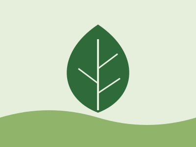

Proteger plantações gastando menos
O LEAF é um projeto de pesquisa de estudantes que investiga como uma câmera, um programa de computador e um pequeno sistema de pulverização podem tratar só as plantas que precisam, usando produtos de origem natural.
Conhecer o projeto
Por que isso importa?
Muita tecnologia agrícola é cara e fica longe de quem tem pouco recurso. A ideia aqui é testar alternativas baratas, com peças comuns e software livre, e descobrir até onde elas funcionam de verdade.
Importante: o LEAF ainda é um experimento. Nada aqui foi validado como solução agrícola pronta para uso no campo.